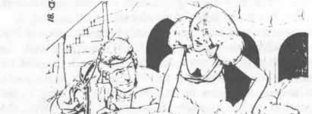

绯红兄弟会 · The Scarlet Brotherhood
Korenth Zan：绯红兄弟会服从之父 · Korenth Zan: The Father of Obedience
绯红兄弟会 The Scarlet Brotherhood
Korenth Zan
服从之父——绯红兄弟会
 |
|
Korenth Zan 出生在绯红兄弟会，是第一任服从之父发起的选择性繁育计划的产物。他的父亲是效忠兄弟会的邪恶战士，母亲是一名刺客。他认识自己的父母，但因为由兄弟会抚养、且父母都在对抗兄弟会敌人的行动中阵亡，他把兄弟会视为真正的家人。
年幼时，他不断接受测试，以找出自己真正的力量。最终，人们认定他具备成为武僧所需的素质，于是选中他接受武僧训练。在接下来的十五年里，他进行强化训练，学习绯红兄弟会的信仰以及武僧技艺。他年轻时以各种孩童恶作剧的领头者闻名，例如半夜袭击食品储藏室，以及破坏不受欢迎教师的住所。这令训练者十分满意，他们认定这个男孩展现出了兄弟会所需要的、带有明显领导才能的品质。
训练结束后，Korenth Zan 与一队由各种兄弟会仆从组成的队伍被派入世间，为领袖收集宝藏，并挫败兄弟会的敌人。数年间，这些邪恶冒险者四处旅行，为了宝藏杀死善良生物，帮助兄弟会的盟友，并大量了解兄弟会据点之外的世界。
Korenth Zan 很快成为队伍首领，他的机智多次拯救队伍。他迅速在武僧等级中晋升，并用武术击败了大量敌人。
当幸存的冒险者达到大约十级后，他们带着礼物与情报返回兄弟会。由于了解外界，他们的建议很受重视；Korenth Zan 的所有前同伴很快都在兄弟会的议会中身居高位。
Korenth Zan 自己回到修道院，专心于比其他人晋升得更高。他在必要时战斗并击败挑战者，以获得或守住等级，直到成为“春之大师”。他还在绯红兄弟会的等级体系中不断提升，最终成为服从之父。
Korenth Zan 是个身材中等的男人，剃着光头（这是他的武僧教团要求的），皮肤苍白，眼睛黑色。他完全忠于兄弟会，并不懈地推动兄弟会在世界上的目标。他花费大量时间监督绯红兄弟会的活动，其余几乎所有时间都用来训练新武僧并保持自身训练。
Korenth Zan 在较低等级时使用过各种武器，并精通手斧、bo stick、棍棒、弩、匕首、标枪、jo stick、矛和长柄砍刀。他仍然每天用这些武器练习，为学员树立良好榜样；但在实际战斗中，他不屑于使用武器。他拥有一根 +5 棍棒、一把 +3 精准弩、一枚隐形戒指和一枚召唤海巨灵戒指。
作为绯红兄弟会的服从之父，Korenth Zan 对下属心存猜疑。他倾向于怀疑他们野心勃勃，正在策划取代自己。一些人暗中认为他的精神状态正在恶化，并且会滑入偏执狂式的疯狂。他的下属仍然忠诚，但他指控叛国、随后迅速处死“叛徒”的做法，正在动摇他们的忠诚。最终，那些想象出来的叛徒会真的出现，而他也会亲手封死自己的命运。
只要不在搜捕叛徒，Korenth Zan 就是一名出色的管理者。他频繁检查下属的工作，使他们不敢拖延或犯下可以避免的错误。事实上，Korenth Zan 认为自己抓到的许多“叛徒”，其实只是以某种方式犯错的普通下属。
Korenth Zan 的现实和潜在敌人名单包括所有不属于绯红兄弟会的人。在据点之外生活的岁月里，他听到足够多对兄弟会不利的看法，足以彻底确认兄弟会之外的人正在密谋对付兄弟会。在许多情况下，他的判断是对的。针对兄弟会的阴谋确实很多，但主要是因为兄弟会被视为对整个奥斯的重大威胁。
Korenth Zan 未婚，但通过选择性繁育计划生育了几个孩子。由于兄弟会不允许任何成员以其他方式生育，他认为这很正常；如果有人告诉他这是错误的，他会非常惊讶。他曾嘲笑那些胆敢批评这种做法的外来者：“你们外界的人在繁育自己的狗时，比繁育自己的后代还要认真！然后你们还奇怪我们兄弟会为什么如此强大！”他的孩子包括一名邪恶的三级战士、一名刺客和两名武僧。他为自己的后代极其自豪，却不会在公开场合表现出来；这违反绯红兄弟会的原则，而他一向严格遵守原则。
目前，他有一名情妇，是效忠兄弟会的邪恶法师。她知道，如果把法术用在任何高阶官员身上，更不用说服从之父本人，都会导致自己遭受不愉快的死亡，因此她只用极高的美貌和魅力来维持情人的感情。由于 Korenth Zan 和其他所有武僧一样属于守序阵营，他不相信随意的滥交。
只要 Korenth Zan 能避免陷入偏执狂，他就会继续领导绯红兄弟会。
Alesh Marin：绯红兄弟会成员 · Alesh Marin: Member, First Order
阿莱什·马林 Alesh Marin
第一阶成员——绯红兄弟会
| 项目 | 数据 |
|---|---|
| 护甲等级 | 6 |
| 移动 | 20” |
| 职业 | MK 6 |
| 生命值 | 32 |
| 攻击次数 | 1 或 3／2 |
| 伤害 | 2–8，或按武器类型 +3 |
| 力量 | 15 |
| 智力 | 10 |
| 睿智 | 17 |
| 敏捷 | 18 |
| 体质 | 18 |
| 魅力 | 9 |
| THAC0 | 18 |
| 阵营 | LE |
| 特殊攻击 | 按 6 级武僧处理 |
| 特殊防御 | 按 6 级武僧处理 |
Alesh Marin 是绯红兄弟会繁育计划的产物，是两名高等级武僧的孩子。与 Korenth Zan 一样，她接受测试后被认定具备成为武僧的能力，于是被接纳到绯红兄弟会训练中心接受武僧训练。
在训练中心，Alesh 的记录称得上合格，却没有什么出众之处。她最近结束训练，按照惯例，和一群兄弟会的年轻人一起被派出去证明自己。兄弟会认为，了解外界并带回宝藏的机会，值得承担这些年轻人中有许多人无法回来的高风险。
此时，Alesh 在土匪王国的斯托因克，担任一家客栈老板的情妇。她是原先冒险队伍中唯一的幸存者，并拥有几件强大的魔法物品。她偏好的行动方式，是诱使一名看起来很富有的冒险者允许她加入队伍，然后等待机会偷走自己能够携带的任何宝藏。
她决心提升权力，并梦想有一天成为绯红兄弟会第一位女性“服从之父”。不冒险时，她会在自己的客房里练习和训练，或者在客栈公共房间担任女侍／护卫。只要她认为客栈老板拥有他总是在吹嘘的那一大箱金币，或者只要他还能继续说服她那箱传说中的宝藏确实存在，她就会继续留在客栈，做客栈老板的情妇。
Alesh Marin 是一名身材纤细的女性，有短金发、蓝眼睛和白皮肤。她能成为护卫，部分原因是斯托因克喝酒的恶棍们不想被人看见自己被一个女人从窗户或门里扔出去。她通过陷害前任女侍，晋升到令人垂涎的首席女侍位置。当“证据”显示前任女侍从钱柜里贪污时，她被解雇，Alesh 得到了这份工作。不幸的是，Alesh 不知道前任女侍是斯托因克刺客公会会长的姐妹。当会长得知姐妹被解雇，并得知事情原委后，他变得相当愤怒。他已经查出 Alesh 是武僧，也是绯红兄弟会成员，但在想出一个足够邪恶的方法之前，他不会寻求报复。
Alesh 的主要弱点是她是个无可救药的策划者和阴谋家。如果让她在简单方案与复杂、偷偷摸摸、还要在背后捅某些“朋友”一刀的计划之间做选择，她每次都会选择后者。Alesh 这么做是因为她享受其中，而且会研究改进技巧的方法。她曾经是一个刺客的情妇；当她学会了对方能教她的全部毒药知识后，便立即毒死他并带走他的财物。在她眼中，其他人都是物品、满足她欲望的人，或必须被清除、以便她继续晋升的障碍。
她并不总能把这种态度排除在言语和行为之外，因此魅力值相对较低。大多数没有被她的美貌蒙蔽的人都不信任她，并像对待毒蛇一样对待她。人们正确地怀疑她应对同伴的死亡负责。这个传闻已经传到绯红兄弟会；她的上级计划利用她成功的欲望为自己服务。
她拥有的魔法物品推动着她的野心：一枚三愿戒指、一块好运石和一颗透明的清澈欧恩石（可以让她无需食物或水也能维持生命）。她的武器收藏包括一把毒匕首和一把 +2 长柄战斧。她扩展了已故情人——那名刺客——教给她的毒药知识，如今对毒药的熟练程度不亚于炼金术士或高级刺客。
她通过斯托因克地区的一名低级战士与绯红兄弟会保持联系；这名战士负责该地区的兄弟会情报网络。她定期向兄弟会总部提交报告，确保自己听起来像是领导者手中的顺从工具。然而，唯一能令她满意的领导者就是她自己。她不知道，传递报告的战士还会从其他来源收集关于她的报告，并加入自己的信息。因此，她没有意识到兄弟会领导层已经知道她的偏离。
Alesh Marin 的最终野心远远超出成为第一位女性“服从之父”。她确信自己会成为比当前统治集团更好的奥斯统治者，并计划利用自己期待中的绯红兄弟会领袖位置，把统治扩展到更多土地。最终，她认为自己可以扩大绯红兄弟会的繁育计划，制造一个完美种族，把所谓的苏尔人优越性与其他种族不可否认的数量结合起来。
Alesh Marin 是个阴沉而执着的女人，除非刚刚完成了某种特别令她开心的背叛，否则很少微笑。她上一次微笑，是刚刚诱使一个带钱的男人拥抱她，好让她拔出毒匕首，从背后刺入他的身体。
她卑鄙至极，永远不会主动改变。她喜欢邪恶，并且更愿意为恶，因为她觉得只有邪恶才能让像自己这样拥有特殊才能的人充分施展光芒。如果假装善良能给她带来好处，她会假装善良；但一旦得到想要的东西，她就会显露真面目。她憎恨所有上级，即使对方曾经善待过她，也只是因为他们拥有她想要的东西。